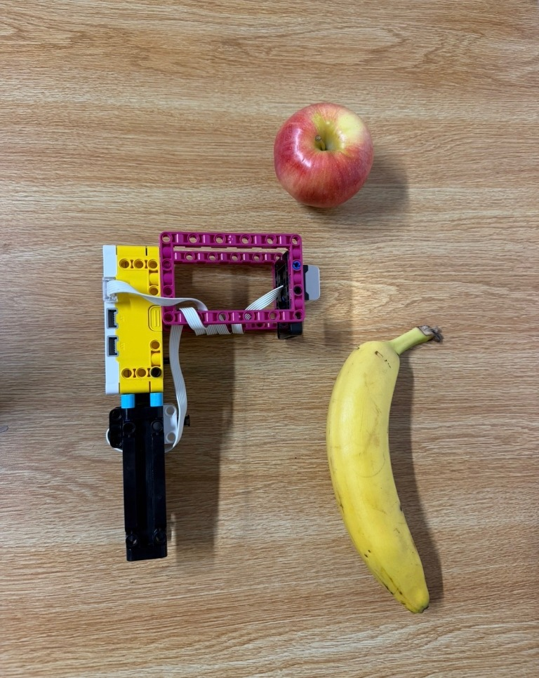

The Fruit Scanner uses a LEGO SPIKE Prime Color Sensor and Force Sensor to collect training samples and classify apples and bananas. Written in MicroPython, it uses a 1-Nearest Neighbor (1-NN) classifier to compare a scanned fruit's normalized RGB color values with samples recorded during training.
The scanner converts each red, green, and blue reading into a ratio of the combined RGB intensity. This represents color as a normalized feature vector rather than relying on the absolute brightness of a reading. During inference, the program calculates Euclidean distance between the new feature vector and each stored sample, then selects the label of the closest sample.
Holding the Force Sensor for at least three seconds cycles between the modes. A scan displays “!” if the training dataset does not contain samples for both fruit labels.
# Hardware: Color Sensor on port A; Force Sensor on port B.
from hub import port, light_matrix, sound
import runloop
import color_sensor
import force_sensor
import math
HOLD_THRESHOLD_MS = 3000
dataset = []
current_mode = "TRAIN_APPLE"
last_sensor_state = False
held_time_ms = 0
long_hold_handled = False
async def main():
global current_mode, last_sensor_state, held_time_ms, long_hold_handled
await light_matrix.write("A")
while True:
pressed = force_sensor.pressed(port.B)
if pressed and not last_sensor_state:
held_time_ms = 0
long_hold_handled = False
elif pressed and last_sensor_state:
held_time_ms = held_time_ms + 50
if pressed and not long_hold_handled:
if held_time_ms >= HOLD_THRESHOLD_MS:
if current_mode == "TRAIN_APPLE":
current_mode = "TRAIN_BANANA"
elif current_mode == "TRAIN_BANANA":
current_mode = "INFERENCE"
else:
current_mode = "TRAIN_APPLE"
await sound.beep(660, 150)
await sound.beep(880, 150)
if current_mode == "TRAIN_APPLE":
await light_matrix.write("A")
elif current_mode == "TRAIN_BANANA":
await light_matrix.write("B")
else:
await light_matrix.write("?")
long_hold_handled = True
if not pressed and last_sensor_state:
if not long_hold_handled:
rgb = color_sensor.rgbi(port.A)
total = rgb[0] + rgb[1] + rgb[2]
if total == 0:
total = 0.0001
red, green, blue = rgb[0]/total, rgb[1]/total, rgb[2]/total
if current_mode == "TRAIN_APPLE":
dataset.append(((red, green, blue), "Apple"))
await sound.beep(880, 150)
await light_matrix.write("A")
elif current_mode == "TRAIN_BANANA":
dataset.append(((red, green, blue), "Banana"))
await sound.beep(880, 150)
await light_matrix.write("B")
else:
found_apple = any(s[1] == "Apple" for s in dataset)
found_banana = any(s[1] == "Banana" for s in dataset)
if not found_apple or not found_banana:
await light_matrix.write("!")
else:
nearest_label, nearest_distance = None, 999999
for sample in dataset:
f = sample[0]
dist = math.sqrt((red - f[0])**2 + (green - f[1])**2 + (blue - f[2])**2)
if dist < nearest_distance:
nearest_distance = dist
nearest_label = sample[1]
if nearest_label == "Apple":
await light_matrix.write("A")
else:
await light_matrix.write("B")
held_time_ms = 0
long_hold_handled = False
last_sensor_state = pressed
await runloop.sleep_ms(50)
runloop.run(main())